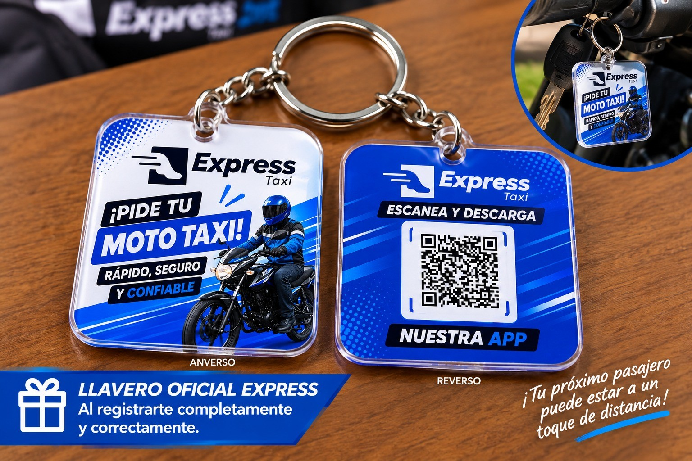

Bs 100 de saldo
Saldo promocional para cubrir la comisión del 10% durante el lanzamiento.
📅 21 de septiembre de 2026 · ⏰ 20:00
Recibe solicitudes cercanas, revisa el precio y decide qué viajes aceptar. Regístrate antes del lanzamiento en Trinidad.
Compara las modalidades de Express y selecciona la que mejor se adapte a ti.
Ideal para moverte rápidamente por Trinidad y encontrar conductores cercanos.
El pasajero propone cuánto quiere pagar. Tú revisas el recorrido y el precio antes de aceptar, rechazar o negociar directamente.
Quiero conducir con Express✓ Tú tienes la última decisión

Los primeros conductores que completen correctamente su registro podrán recibir un llavero oficial de Express.
Disponibilidad promocional estimada; los registros confirmados pueden variar.
Quiero registrarme →Conecta con pasajeros cercanos, administra tu tiempo y negocia directamente el precio de cada viaje.
Saldo promocional para cubrir la comisión del 10% durante el lanzamiento.
Recibe solicitudes de pasajeros próximos a tu ubicación.
Tú decides cuándo conectarte y cuánto tiempo conducir.
El pasajero propone un precio y tú decides si aceptarlo.
El saldo promocional de Bs 100 cubre la comisión del 10%. Al completar los 200 viajes, el 100% de esos Bs 1.000 es tuyo.
Registrarme como conductorMueve el control para calcular una estimación según tu ingreso diario. El resultado no garantiza ganancias.
Mientras tu saldo promocional cubra la comisión, conservas el 100% del pago de esos viajes.
Indica tu nombre, celular, vehículo y correo electrónico.
El equipo de Express verificará tu información por WhatsApp.
Revisa el recorrido y decide qué viajes quieres aceptar.
Herramientas creadas para acompañar a conductores y pasajeros durante cada recorrido.
Cuando la pasajera seleccione esta modalidad, podrá solicitar un viaje con una conductora verificada. Así sabrá que será trasladada por otra mujer para viajar con mayor tranquilidad y seguridad.
Disponible según la presencia de conductoras cercanas.Reconocimiento facial para conductores y pasajeros.
Envía una alerta inmediata a la administración.
Una persona de confianza puede seguir la ubicación en tiempo real.
Comunícate con Express cuando necesites ayuda.
Selecciona un lugar para verlo centrado en el mapa. El carrusel comienza en Mercado Campesino y Pompeya, y también puedes avanzar con las flechas.
Invita a otros conductores con tu código. Cuando completen 100 viajes, recibes tu recompensa y continúas ganando con la modalidad recurrente.
Cuando el conductor referido complete 100 viajes, las recompensas se acreditarán en el monedero.
El líder recibe de por vida el 1% de la comisión de la empresa por cada viaje completado por sus conductores referidos.
“La aplicación es fácil de usar.”Mototaxista de Trinidad
“Me gusta poder negociar el precio.”Usuaria de Trinidad
Personas con moto o auto que completen correctamente sus datos y el proceso de verificación de Express.
Una pasajera podrá seleccionar la modalidad para solicitar una conductora mujer verificada. La disponibilidad dependerá de las conductoras que se encuentren cerca.
Se utiliza únicamente para cubrir la comisión del 10% de los viajes. No se puede retirar ni transferir.
El pasajero propone un precio y el conductor decide si acepta, rechaza o negocia la solicitud.
Cuando tu conductor referido complete 100 viajes, recibes Bs 100 en el monedero y el referido recibe Bs 50.
Los primeros conductores que completen correctamente su registro podrán recibir el llavero oficial de lanzamiento.
Regístrate ahora y sé parte del lanzamiento oficial de Express Trinidad.
🚀 QUIERO MI CUENTA